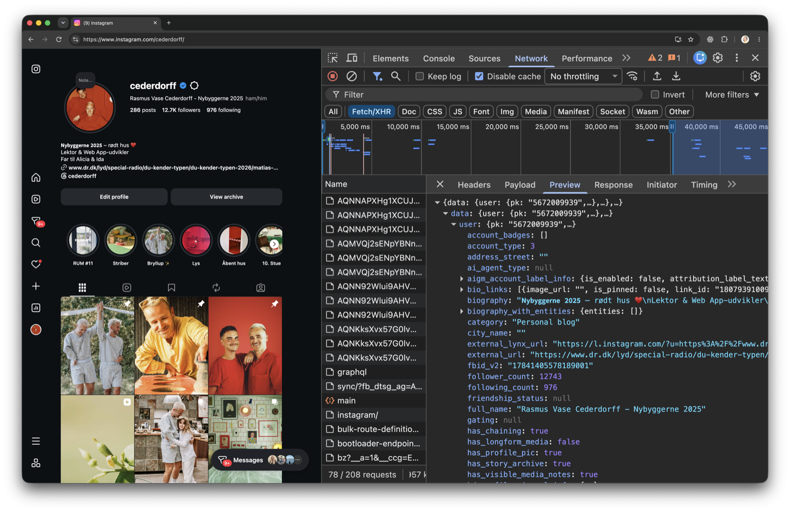

response.render() kombinerer data og en EJS-template til et færdigt HTML-dokument. Browseren viser det med det samme.
WU-E26A · RACE 5 · 16. september 2026
Fra HTML
Fra HTML
til JSON
REST API: HTTP-metoder som CRUD · statuskoder · response.json()
Fra HTML-sider til rene data
- Opsamling: PersistensloadStudents()/saveStudents() og read → modify → write
- Fra sider (HTML) til data (JSON)SSR vs REST API
- Hvad er et API?Application Programming Interface — og restaurant-analogien
- Hvad er et REST API?HTTP, ressourcer, CRUD, statuskoder, REST's Key Principles — og dagens øvelse
- JSON begge veje
express.json() - Find én bestemt ressourceroute parameters
Persistens
fra sidste gang
loadStudents()/saveStudents() eller loadMessages()/saveMessages() — og hvorfor read → modify → write ikke må springes over.
Kan I forklare de fire led med jeres egne ord?
fil→
JSON.parse()→ret data→JSON.stringify()→fil
Hvad er JSON egentlig — og hvordan er det forskelligt fra et JavaScript-objekt?
Hvorfor bruger vi JSON til at gemme og sende data, frem for fx almindelig tekst?
Hvorfor forsvandt data ved en genstart, før I fik persistens til at virke?
Hvorfor skal jeres JSON-fil indeholde [], allerede før serveren skriver noget?
Hvad gør JSON.stringify(data, null, 2) anderledes end uden de sidste to argumenter?
Har I fået det til at virke i mindst én øvelse — og bekræftet det ved at genstarte serveren?
Fra HTML-sider
til rene data
Samme request/response-model og samme routing-tankegang — bare et andet "produkt" i selve svaret.
Samme server — helt forskelligt "produkt" i svaret
response.json() sender rene data — intet HTML, ingen visning involveret. Det er op til klienten selv at vise dem.
Samme request/response-model, samme routing-tankegang — bare et andet svar.
response.render() vs. response.json()
app.get("/", (request, response) => {
response.render("index", {
messages
});
});
// → et helt HTML-dokument,
// bygget af index.ejsapp.get("/messages", (request, response) => {
response.json(messages);
});
// → kun dataene,
// som JSONIngen EJS, ingen views-mappe — messages sendes direkte som JSON.
En klient, der selv kører JavaScript, har brug for data — ikke en hel side
SSR · det I kender
- Serveren bestemmer hele visningen
- Et helt nyt HTML-dokument for hvert request
- Fint, når browseren bare skal vise siden
REST API · det I bygger nu
- Serveren sender kun data
fetch()i browseren beder selv om data og bygger UI'et- Forberedelse til DOB 5:
fetch()og async JavaScript
Samme AMAbot, samme svarlogik — men senere uden EJS, drevet af fetch() i stedet.
Hvad er
et API?
Application Programming Interface — en måde to systemer kan kommunikere sammen på.
To programmer, hver sin rolle — forbundet af et request
Request →metode · URL · evt. body
← Responsestatus · data
API'et er aftalen om hvordan den samtale foregår — ikke selve samtalen.
Et API er reglerne for, hvordan to programmer taler sammen
Et sæt regler, et program stiller til rådighed, så andre programmer kan bruge dets data eller funktioner — uden selv at kende det indeni.
Én bestemt måde at bygge et API på: hver ressource har sin egen URL, og HTTP-metoderne GET/POST/PUT/DELETE bruges til at arbejde med den.
Jeres Express-routes er allerede et API — i dag gør vi dem RESTful.
Ikke kun webservere — I møder API'er hver dag
getUserMedia() beder telefonen eller laptoppen om adgang til kamera og mikrofon
navigator.geolocation spørger enheden, hvor brugeren befinder sig
Og faktisk har I allerede set API-kald i praksis — det binder vi lige sammen.
I har allerede set API-kald i Network-fanen


Samme mønster, I så i Network-fanen i RACE 4 — Canvas og Instagram henter deres data sådan.
Tjeneren tager imod bestillingen — uden selv at lave maden
ved ikke, hvordan køkkenet er indrettet
tager imod, videregiver, leverer svaret
laver retten — logik og data bag kulisserne
Kunden går aldrig ind i køkkenet — det er præcis, hvad et API skjuler for klienten.
Restaurant-analogien, forklaret
Ressourcer,
metoder og statuskoder
Sådan gør REST et API konkret — bygget oven på HTTP, med ressourcer, CRUD, statuskoder og REST's Key Principles.
REST opfinder intet nyt — det bruger HTTP, som det allerede er
Kilde: MDN ↗"HTTP is the standard way to communicate between clients and servers" — en request-response-protokol, som browseren og Thunder Client allerede taler.
"HTTP defines a set of request methods to indicate the desired action to be performed for a given resource." — GET, POST, PUT og DELETE er HTTP's egne metoder, ikke noget REST selv opfinder.
REST er reglerne for hvordan I bruger de HTTP-metoder, der allerede findes — derfor går GET/POST/PUT/DELETE igen i næste princip.
En måde at bygge et API på — efter faste retningslinjer og principper
Et sæt regler for, hvordan ressourcer navngives med URL'er og manipuleres med stateless HTTP-requests — REST er ikke en protokol, men en arkitektur-stil.
Hver ressource (fx /students) har sin egen URL. HTTP-metoderne GET/POST/PUT/DELETE læser og ændrer den — uden at serveren husker noget mellem requests.
REST er ikke noget, I installerer — det er retningslinjerne, I designer API'et efter.
REST APIs i 100 sekunder
REST API-øvelse: Studerende med CRUD
Åbn øvelsen på GitHub ↗- Nyt, selvstændigt projekt —
express.json(), ingen EJS og ingenexpress.urlencoded() - Byg GET, GET/:id, POST, PUT og DELETE — test hver route i Thunder Client, før du går videre
request.params.ider en string — huskNumber(), når den skal sammenlignes med et id- Del 2 flytter data til
data/students.jsonmedloadStudents()/saveStudents()— uden at ændre selve CRUD-logikken
I går i gang nu — vi stopper undervejs og gennemgår principperne. Statuskoder og fejlhåndtering af ugyldige id'er venter til en senere øvelse.
Seks principper binder det hele sammen
Kilde: Codecademy ↗/students og /students/:id.GET/POST/PUT/DELETE mapper direkte til Read/Create/Update/Delete.200, 201, 404, flere kommer senere.Lad os se nærmere på hver af dem — med eksempler fra jeres /students-API.
Klient og server kan skiftes ud uden at kende hinandens indre
Client-Server: adskiller klient og server, så de kan udvikle sig uafhængigt af hinanden — klienten bekymrer sig ikke om datalagring, serveren bekymrer sig ikke om brugergrænsefladen.
Request →GET /students
← Response200 · JSON-array
Derfor kan I teste jeres API i Thunder Client, længe før der findes en rigtig frontend.
Serveren husker intet mellem to requests
Stateless: hvert request fra klienten til serveren indeholder al nødvendig information — serveren gemmer ikke klientens tilstand mellem requests.
GET /students/1
Serveren slår 1 op i students-arrayet og svarer
Ingen hukommelse
mellem requests
mellem requests
GET /students/2
Helt nyt, uafhængigt request — id'et skal med igen
Derfor står id'et i URL'en hver gang — request.params.id er den eneste "hukommelse", requestet har.
En ressource er alt, der kan identificeres og tilgås via sin egen URL
Ressource-baseret design: i REST er alt en ressource — struktureret omkring entydigt identificerbare ressourcer, der tilgås via specifikke URL'er og kan manipuleres med HTTP-metoderne GET/POST/PUT/DELETE.
/students/3 — én bestemt studerende i listen
/answers/mad — én bestemt svarregel i AMAbotten
/regioner/1082 — én bestemt region
/users/cederdorff — én bestemt konto
En ressource er ikke en handling — det er en ting, jeres API stiller til rådighed med sin egen URL.
En URL identificerer én ting — eller en hel samling
/students — hele listen af studerende. GET og POST arbejder her, uden id i URL'en.
/students/:id — samlingens URL plus dens id. GET, PUT og DELETE på én bestemt studerende bruger denne form.
Ressourcer navngives med et navneord i flertal — ikke et verbum i URL'en.
Ressourcens sti — ikke et spørgsmålstegn eller et verbum — bærer betydningen
Navneord + HTTP-metode er nok: ressourcens navn i stien og metoden (GET/POST/PUT/DELETE) beskriver tilsammen operationen — det er præcis det, der gør URL'en simpel og fri for verber.
Undgå
GET /students?id=2
Id'et gemmer sig i en query — stien fortæller ikke, at det er én bestemt studerende.
GET /getStudent/2
Et verbum i stien — GET siger allerede, at det er en hentning.
POST /createStudent
Endnu et verbum i stien — POST siger allerede, at det er en oprettelse.
Korrekt
GET /students/2
Stien fortæller historien selv: samlingen students, elementet 2.
DELETE /students/2
Samme sti, ny metode — DELETE genbruger URL'en, den ændrer den aldrig.
POST /students
Samme regel gælder ved oprettelse: ressourcens sti, ikke et verbum.
Samme ressource, samme sti — GET/POST/PUT/DELETE giver den fire forskellige betydninger. Det er næste princip.
HTTP-metoderne mapper direkte til CRUD
GETReadhent én eller flere studerende
POSTCreateopret en ny studerende
PUTUpdate (fuld)erstat hele den eksisterende studerende
PATCHUpdate (delvis)opdatér kun udvalgte felter
DELETEDeletefjern en studerende
CRUD er navnet på mønsteret — GET/POST/PUT/PATCH/DELETE er HTTP's version af det. I øvelserne bruger vi PUT.
Statuskoden fortæller, hvad der skete med ressourcen
Alle statuskoder · MDN ↗response.json() sætter automatisk 200 — jeres egne statuskoder venter til en senere øvelse.
REST API'er taler typisk JSON — læsbart for mennesker, hurtigt for maskiner
JSON som format: REST API'er bruger typisk JSON som dataformat for effektiv og letlæselig kommunikation mellem klient og server.
HTTP/1.1 200 OK
Content-Type: application/json; charset=utf-8
[
{ "id": 1, "name": "Aisha", "education": "Multimediedesign" },
{ "id": 2, "name": "Noah", "education": "Datamatiker" }
]- Kald
response.json()- Status
- 200 (sat automatisk)
- Content-Type
- application/json
- Body
- arrayet, skrevet som JSON-tekst
I kan altid se det selv i Thunder Client — Content-Type: application/json står lige der i response-headers.
express.json()
JSON
begge veje
express.urlencoded() og express.json() er to måder, en request body kan være kodet på.
Samme request.body — forskellig middleware
express.urlencoded() · kendt fra RACE 2
Forstår data fra en HTML-formular: name=Aisha&education=...
express.json() · nyt i dag
Forstår en JSON-body: { "name": "Aisha" } — det Thunder Client og senere fetch() sender.
Uden den rigtige middleware er request.body undefined — uanset hvad klienten sender.
express.json() gør JSON-bodyen til request.body
import express from "express";
const app = express();
// gør JSON-bodyen tilgængelig
// i request.body
app.use(express.json());app.post("/students", (request, response) => {
console.log(request.body);
// { name: "Mateo", education: "..." }
response.json(request.body);
});Ligesom express.urlencoded() skal den registreres før de routes, der bruger request.body.
Tre typiske fejl — og hvor du retter dem
request.body manglerKontrollér at app.use(express.json()) står før dine routes
{} i stedet for dataTjek at Thunder Client faktisk sender en JSON-body, ikke form-data
Content-Type: application/json
Find én
bestemt ressource
:id i stien, request.params.id som string, .find() og 404 når intet matcher.
request.params.id er altid en string
app.get("/students/:id", (request, response) => {
console.log(
request.params.id,
typeof request.params.id
);
response.send();
});GET /students/2
2 stringSelvom id'et ligner et tal i URL'en, er request.params.id altid en string.
Number() før sammenligning
En string kan ikke være strict-equal med et tal
request.params.id // "2"Number()Number(request.params.id) // 2.find()student.id === 2 // trueNumber()konverterer en string til et tal — eller NaN, hvis det ikke lykkes
===sammenligner både værdi og type — "2" === 2 er false
const student = students.find(
(student) => student.id === Number(request.params.id)
);Fra URL til ét bestemt objekt
/students/2:id i stien→
request.params.idNumber()string → tal→
.find()response.json(student)ét objekt, ikke et arrayFindes id'et ikke, får du null tilbage i dag — rigtig 404-håndtering venter til en senere øvelse.
Opslagsværker og øvelser
Response objectExpress.js ↗
HTTP response status codesMDN ↗
HTTP request methodsMDN ↗
RESTMDN ↗
REST — Key PrinciplesCodecademy ↗
REST API Explained (2 min)YouTube ↗
Dataforsyningen · en rigtig dansk REST APIdataforsyningen.dk ↗
REST API-øvelse · Studerende med CRUDGitHub ↗
Øvelse 6 · AMAbotten som REST APIGitHub ↗